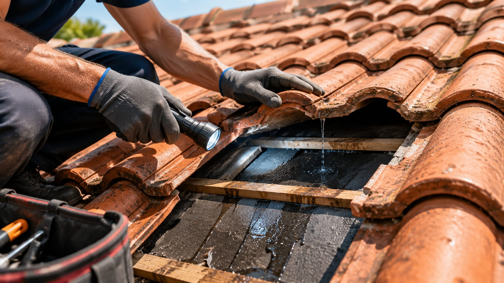
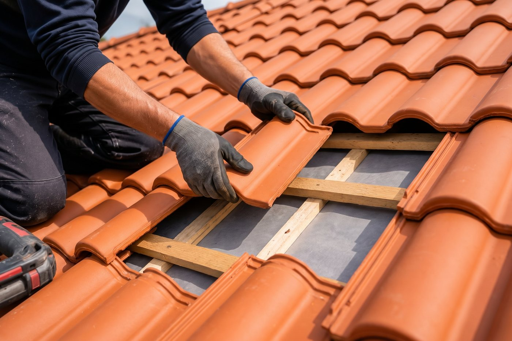
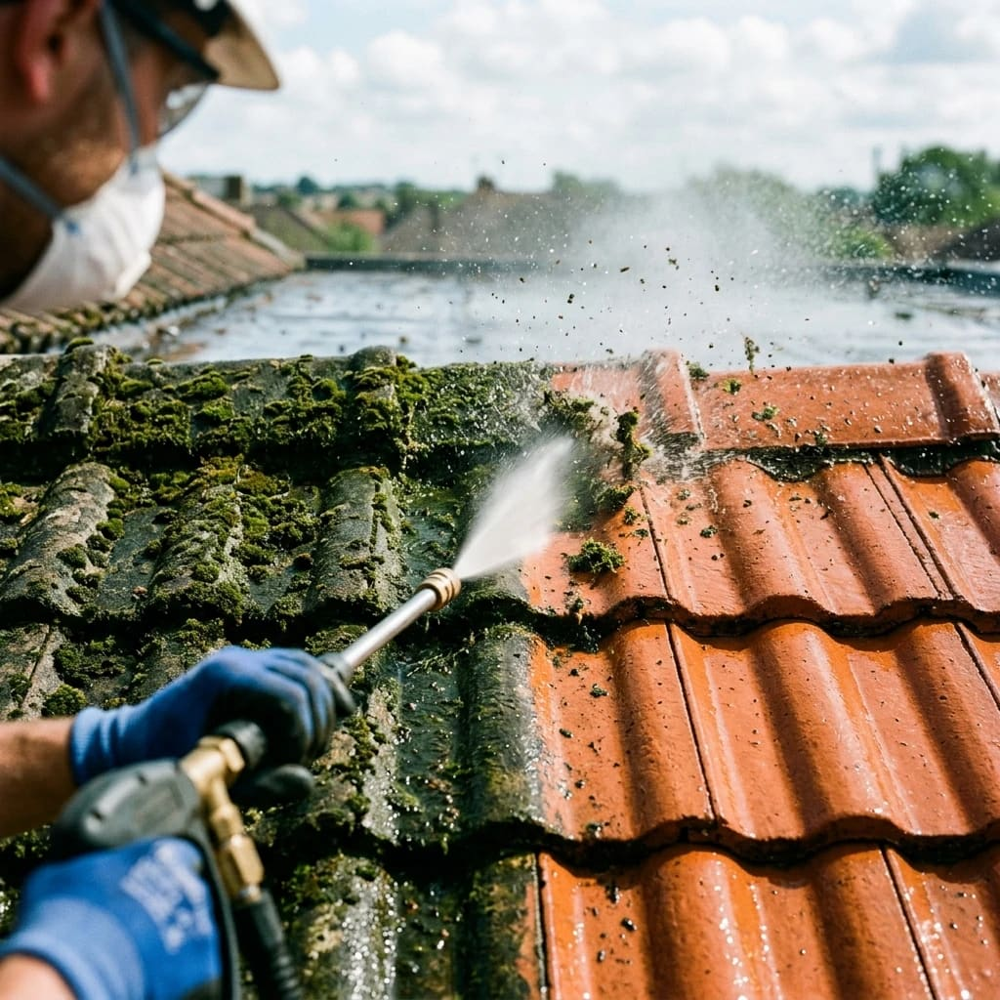
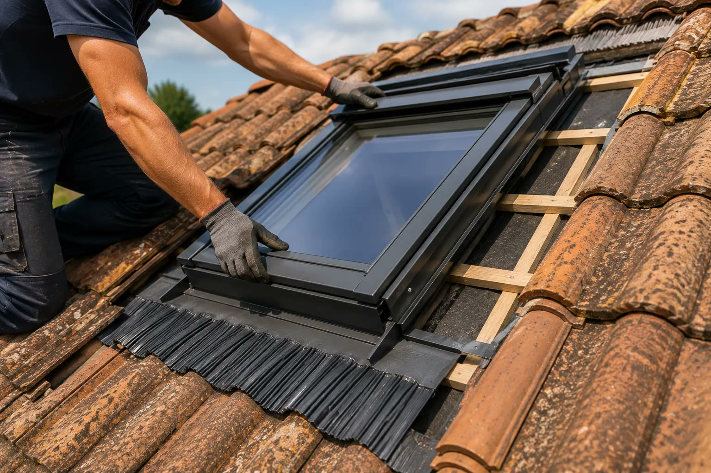
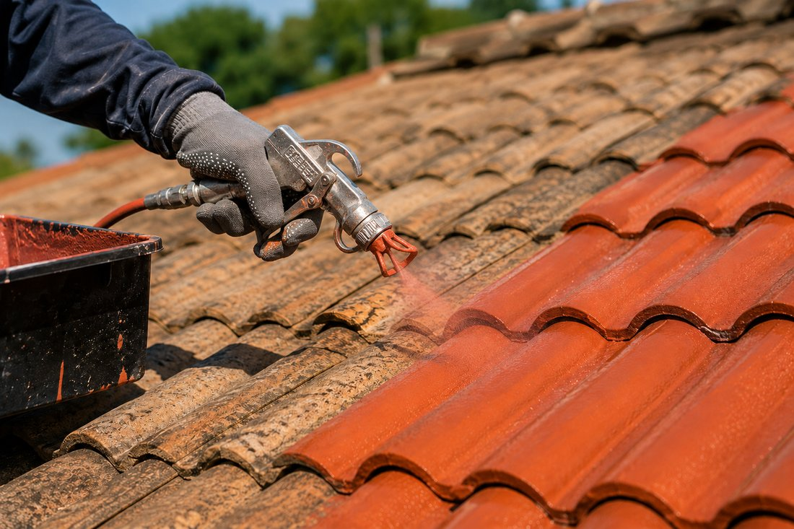

Rénovation et réparation de toiture
Fuite, tuiles cassées, faîtage fissuré : diagnostic précis, réparation ciblée ou réfection complète.
En savoir plusBasés aux Garennes-sur-Loire, à dix minutes d'Angers, nous intervenons dans toute l'agglomération angevine et le département : dépannage de fuite, rénovation, toiture neuve, zinguerie, Velux et entretien.
Un déplacement rapide, une connaissance des toitures locales, de l'ardoise de Trélazé à la tuile des pavillons récents.
Du centre historique en tuffeau et ardoise aux quartiers pavillonnaires de la Roseraie, Belle-Beille ou Monplaisir : nous connaissons chaque type de toiture angevine.
Notre base, entre Loire et Aubance : Juigné-sur-Loire et Saint-Jean-des-Mauvrets, à quelques minutes de l'atelier.
Capitale de l'ardoise : reprise des couvertures en ardoise naturelle, crochets inox et remplacement des ardoises fendues.
Maisons de bord de Loire exposées à l'humidité : démoussage, zinguerie et reprise des points singuliers.
Pavillons des années 70 à 2000 en tuile béton : rénovation, peinture de toiture et pose de fenêtres de toit.
Habitat résidentiel et zone d'activités : toitures de maisons comme de bâtiments professionnels.
Lotissements récents et longères rénovées : entretien régulier et remplacement de Velux.
Villages de la Pointe et de Pruniers, maisons anciennes en schiste : rénovation de couverture et zinguerie.
Coteaux de l'Aubance, toits exposés aux vents d'ouest : réparation après tempête et fixation des couvertures.
Secteur viticole, bâtisses anciennes et dépendances : réfection complète et reprise de charpente.
Quartiers de l'Éventard et bords de Sarthe : démoussage, hydrofuge et gouttières.
Maisons individuelles en tuile et ardoise : intervention rapide en cas de fuite.
Saint-Sylvain et Pellouailles : toiture neuve sur extension et rénovation de couverture.
Vallée de l'Authion, longères et fermes rénovées : grandes surfaces de couverture et zinguerie.
Maisons de bord de Loire : entretien, réparation et remplacement de gouttières.
Commune rurale voisine de notre atelier : dépannage rapide et devis sous 48 h.
Votre commune n'est pas dans la liste ? Nous couvrons l'ensemble du Maine-et-Loire : appelez-nous, nous vous dirons tout de suite si nous pouvons venir.

Fuite, tuiles cassées, faîtage fissuré : diagnostic précis, réparation ciblée ou réfection complète.
En savoir plus
Construction, extension ou réfection totale : une couverture neuve posée dans les règles de l'art.
En savoir plus
Nettoyage, traitement anti-mousse et hydrofuge : un toit propre dure des années de plus.
En savoir plus
Gouttières, chéneaux, noues et solins : l'eau évacuée loin de la maison, façades et fondations protégées.
En savoir plus
Plus de lumière sous les combles, une fenêtre de toit étanche et bien isolée, en pose neuve ou en remplacement.
En savoir plus
Une toiture terne retrouve sa teinte et une protection durable contre la pluie, le soleil et les UV.
En savoir plusDiagnostic sur place et devis gratuit dans toute l'agglomération angevine.
Du lundi au samedi, 8h30 – 18h · Urgence fuite : appelez-nous.